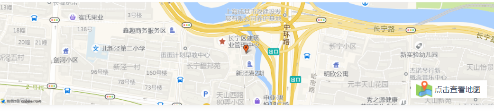

上海.1-3年.学历不限
1、负责前期页面的搭建
2、负责重点项目的前端技术方案和架构的研发和维护工作
3、参与或主导团队内部重要技术项目的规划及落地
1、技术栈：对React/Vue、Webpack、组件库、动静分离，ESLint有深入的理解
2、公共能力：有丰富的 Web 标准、易用性、浏览器端原理、网站性能优化以及网络等方面的知识
3、实战：对于业务需求有一定抽象能力，并且定期对自己工作进行复盘总结
4、合作：善于交流，有良好的团队合作精神和协调沟通能力，有与产品、后端、QA等多方密切配合的经验和意识
1、有大型后台系统的研发经验，尤其是B端系统
2、心态开放，有主动进取心，有较强的自我要求
3、热爱互联网和新技术，跟进研究前端业界的前沿理念和技术实践
五险一金
补充公积金
年终奖
弹性工作制
定期体检
免费小零食、咖啡等
上海长宁区申亚时代广场B座
